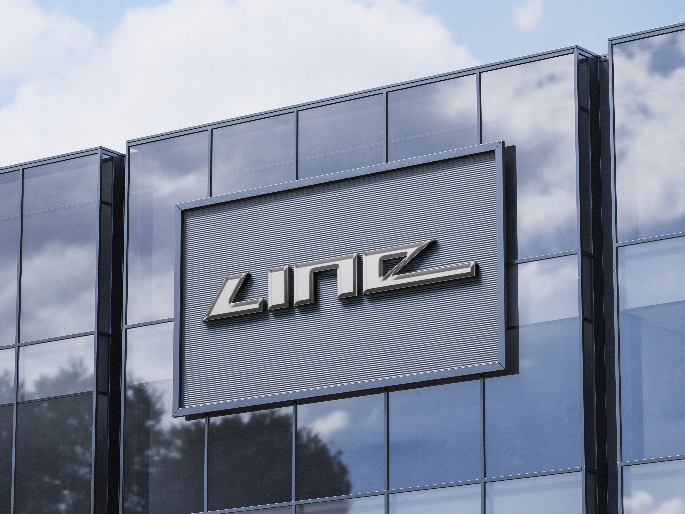

Een logo speelt een belangrijke rol in het visueel kenbaar maken van de identiteit van een bedrijf en is vaak het eerste visuele element dat met een merk wordt geassocieerd.
Voor dit project werd mij een willekeurig woord uit een woordenboek toegewezen, gekoppeld aan een specifiek thema. Het woord ‘line’ en het thema sportautomerk vormden het uitgangspunt voor het ontwerp van meerdere logo’s, met een focus op snelheid en dynamiek.
Ik koos voor een abstracte benadering, waarbij het logo de kernwaarden van een sportieve auto op een visueel krachtige manier communiceert. Het betekenisvolle element van het woord line is geïntegreerd door het ontwerp op te bouwen rond het gebruik van lijn.